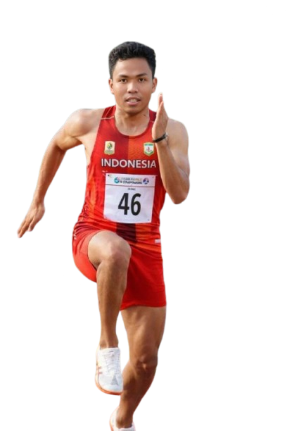

Infografik • Atletik Indonesia
Zohri, sprinter pertama Indonesia
yang menjadi juara dunia.
Cepat berlari, besar menginspirasi
Nama
Lalu Muhammad Zohri
Tempat, tanggal lahir
Karang Pansor, Lombok Utara,
NTB, 1 Juli 2000
Pendidikan
- SD Negeri 2 Pemenang Barat
- SMP Negeri 1 Pemenang
- SMA Negeri 2 Mataram

LALUMUHAMMAD
ZOHRI
Prestasi
7 medali emas di berbagai kejuaraan nasional
Medali emas nomor 100 meter di Kejuaraan Asia Junior, Jepang. Catatan waktu 10,27 detik.
Juara dunia 100 meter U-20 di Tampere, Finlandia, dengan catatan 10,18 detik.
Awal 2018, Zohri bergabung dengan Pelatnas PB Persatuan Atletik Seluruh Indonesia (PASI) sebagai pelari estafet.
Juni 2018, meraih emas nomor 100 meter di Kejuaraan Dunia Atletik U-20 di Tampere, Finlandia.
Februari 2018, mengikuti uji tanding Asian Games untuk nomor 100 meter dengan catatan waktu 10,32 detik.
Prestasi Zohri melampaui rekor junior nasional 100 meter dengan catatan waktu 10,18 detik.
April 2018, uji tanding di Amerika Serikat untuk nomor 100 meter dengan catatan 10,33 detik.